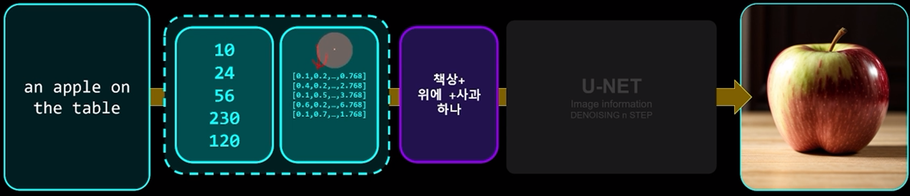
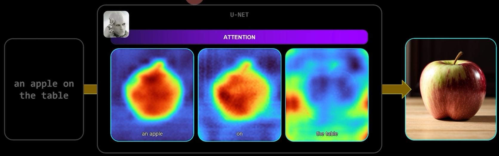
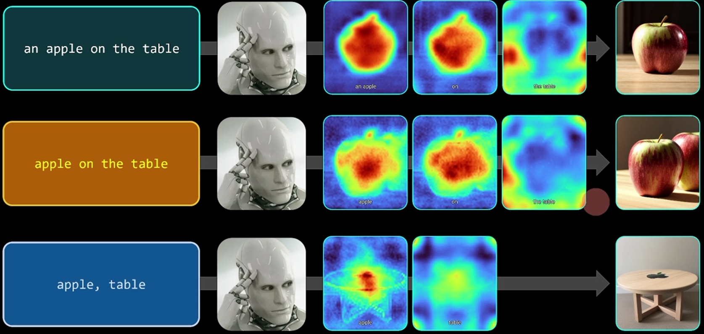
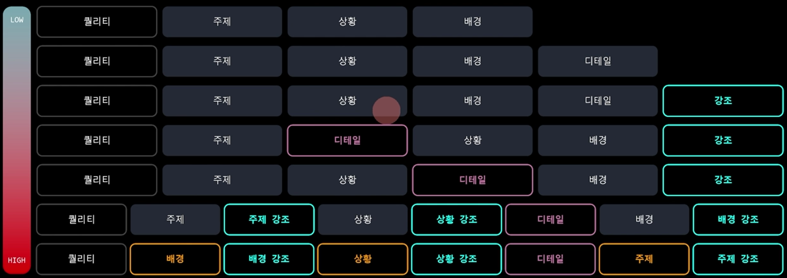
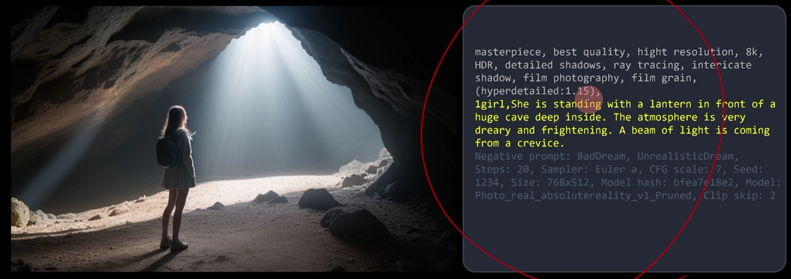
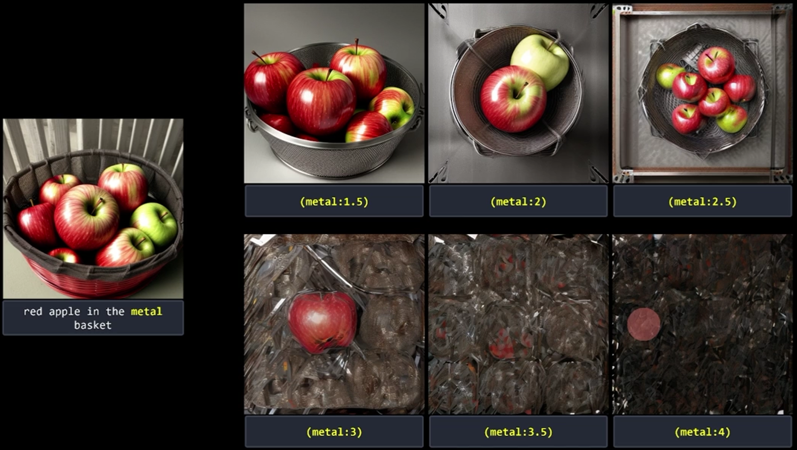
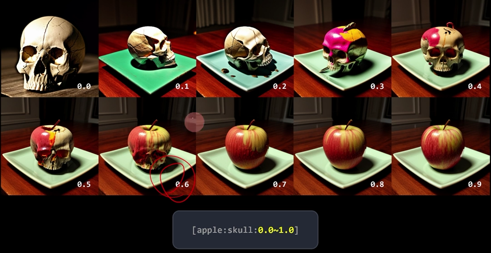

4-1 Prompt
AI와 프롬프트 기반 디자인 옵션 생성

stable diffusion 모델은 "prompt" 텍스트를 벡터화하여 각 단어나 구문의 의미를 수치적으로 표현합니다.

어텐션 메커니즘을 통해 이러한 벡터 사이의 관계를 분석하고, 중요도에 따라 가중치를 부여하여 어텐션 맵을 생성합니다.
이 맵은 모델이 텍스트의 어떤 부분에 더 집중하고 있는지를 시각적으로 보여줍니다. 샘플링 스텝은 이미지 생성 과정에서 모델이 결과물을 단계별로 구축하는 방식을 나타냅니다. 각 스텝에서 모델은 어텐션 맵을 참조하여 이미지의 특정 부분을 더욱 세밀하게 처리하거나 특정 스타일이나 요소를 강조합니다.

> prompt에서 작은 수정은 생성되는 attention map에 영향을 미치기 때문에 다른 이미지가 생성될 수 있습니다.
- 포지티브 및 네거티브 프롬프팅
기본적인 prompt의 구성으로 어떤것을 생성할지를 특정요소를 text로 표현합니다. gpt와 같이 vectorized 된 방향을 가진 text들이 attention map을 형성하면서 이미지를 생성합니다.
특정 요소를 강조(포지티브)하거나 배제(네거티브)하기 위해 사용됩니다. 예: 특정 스타일이나 요소를 배제하기 위한 네거티브 프롬프트 사용.
- 클레이 프롬프팅(Clay Prompting)
클레이를 반죽하듯 포지티브, 네거티브 프롬프팅을 붙였다가 떼었다가를 반복하면서 반죽을 하는 단계 프롬프트를 조작하면서 원하는 형태로 '반죽'하는 과정을 의미합니다. 창의적인 프로세스로, 초기 아이디어를 형성하고 수정하는 단계입니다.
프롬프트 구성 접근 단계

-
기본 요소:
- 퀄리티: 출력물의 품질을 결정합니다.
- 배경/주제: 디자인의 주제나 배경을 설정합니다.
- 상황: 디자인이 적용될 특정 상황이나 컨텍스트를 고려합니다.
-
조정 가능한 요소:
- 이후의 단계들은 필요에 따라 순서를 조정하며 사용할 수 있습니다.
- 디테일: 디자인의 세부 사항을 조절합니다.
- 강조: 특정 요소나 특징을 강조합니다.
- 변화: 디자인의 다양한 변화를 고려합니다.
- 스타일: 특정 스타일이나 방향성을 정합니다.

네거티브 임베딩
- 네거티브 임베딩
- 특정 요소를 제외하기 위해 사용됩니다.
-
올바른 그림을 만들기 위한 네거티브 프롬프트 모음입니다.
-
로라 스타일 및 텍스추얼 인버전과의 조합 주의
- 네거티브 임베딩은 간결하고 정교하게 사용되어야 합니다.
표현법의 조절

표현법 강조
(text) 1.1 배 강조
((text)) 1.21배 강조
(text:1.3) 1.3 배 강조
표현법 감소
[text] 1.1배 감소
[[text]] 1.21배 감소
교차하여 섞기

[From:to:When] djeltj qnxj djelRKwl
[apple:skull:0.5] 반까지 사과 반 부터 해골
[apple:skull:5] 스텝수 지정 , 5 step까지 사과 6 step 부터 해골
[apple::15] 15step 까지 apple , 16step부터 No prompt
[skull:10] 10step 까지 no prompt, 16 step 부터 해골
switching
[A|B] 번갈아 가면서 이미지 생성
[apple | orange] sampling step을 20으로 했을 경우 홀수 (1,3,5) 는 apple, (2,4,6)은 짝수 orange
[apple | orange | ball] apple, orange, ball을 각각 1번씩 돌아가면서 정해진 step 만큼 생성